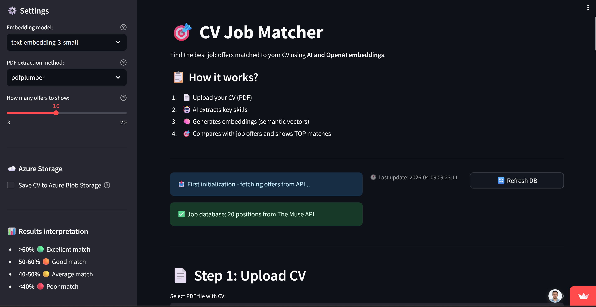

🎯 CV Job Matcher
AI-Powered CV Matching with OpenAI Embeddings, Streamlit

🚀 Live Demo
📌 Project Overview
CV Job Matcher is an AI-powered web application that semantically matches a candidate's CV to real job offers using OpenAI embeddings and cosine similarity.
The project was built as an end-to-end portfolio project, covering the full pipeline from PDF text extraction, through LLM-based skills condensation, semantic vector matching, to cloud deployment on Azure — demonstrating practical skills in AI integration, cloud storage, and production deployment.
It was designed bottom-up: starting with 3 exploratory Jupyter notebooks to empirically validate each component before assembling the final Streamlit application.
🎯 Features
- 📄 PDF CV extraction — dual-library support: pdfplumber (default) and PyPDF2
- 🤖 AI skills extraction — GPT-4o-mini condenses full CV into a concise skills summary before embedding
- 🧠 Semantic matching — OpenAI
text-embedding-3-small(1536-dim vectors) + cosine similarity - ☁️ Azure Blob Storage — uploaded CVs persisted to
cv-uploadscontainer with timestamp naming - 🔄 Live job data — real-time offers from The Muse API (ML, DS, Python, AI, Deep Learning categories)
- 📊 CSV export — download ranked match results
- ⚡ Cache TTL=1h — minimizes API token costs across user sessions
🧠 Pipeline Architecture
[Upload PDF]
↓
[pdfplumber → raw text ~9 600 chars]
↓
[GPT-4o-mini → skills condensation ~400 chars]
"Python, PyTorch, scikit-learn, Azure,
time series, ETL pipelines, OpenAI API..."
↓
[text-embedding-3-small → vector 1536-dim]
CV skills → [−0.023, −0.008, 0.003, ...]
↓
[The Muse API → live job offers]
deduplicated by job.id, cached TTL=1h
↓
[text-embedding-3-small → job vectors]
title + description + requirements → vector
↓
[cosine_similarity (scikit-learn)]
sim(cv_vector, job_vector) → score 0.0–1.0
↓
[Ranked results + CSV export]
↓
[Azure Blob Storage]
CV saved as {timestamp}_{filename}
💡 Key Design Decisions
Why GPT-4o-mini before embedding?
Full CV contains ~9 600 characters of noise — dates, formatting, project descriptions. Embedding raw CV produces noisier vectors. GPT-4o-mini reduces it to ~400 characters of pure skills signal, significantly improving matching quality. Validated empirically in notebook 02_embeddings_test.ipynb.
Why cosine similarity over dot product? OpenAI embeddings are L2-normalized (vector norm = 1.0), so cosine similarity is equivalent to dot product — but cosine similarity is robust to text length differences between CV and job descriptions.
Why Azure Blob Storage? Azure Web App is stateless — files written to local disk are lost on restart. Blob Storage ensures CV persistence across deployments and provides an audit trail of uploaded files.
Why cache TTL=1h on job offers? Each embedding call costs tokens. Caching prevents redundant API calls when multiple users refresh the app within the same hour window.
🔧 Notebooks (Research Phase)
| Notebook | Purpose | Key Finding |
|---|---|---|
01_pdf_extraction.ipynb |
Compared PyPDF2 vs pdfplumber | pdfplumber produces cleaner text (fewer formatting artifacts) |
02_embeddings_test.ipynb |
Tested embedding strategies | Skills-only embedding outperforms full CV embedding; validated norm=1.0 |
03_justjoin_api.ipynb |
Tested job data sources | The Muse API chosen; deduplication by job.id implemented |
📊 Results
Match scores from notebook validation (CV vs sample job offers):
| Rank | Job Title | Match Score |
|---|---|---|
| 🥇 | Senior Machine Learning Engineer | 61.37% |
| 🥈 | AI Research Engineer | 49.76% |
| 🥉 | Data Scientist | 49.53% |
| 4 | Python Backend Developer | 49.10% |
| 5 | Junior Python Developer | 44.70% |
Note: Scores of 60%+ indicate strong semantic alignment. Cosine similarity between embedding vectors does not reach 90%+ for typical text pairs — the model correctly ranked the most relevant role first.
🧰 Tech Stack
- Python 3.11
- Streamlit — web frontend and deployment UI
- OpenAI API —
GPT-4o-mini(skills extraction) +text-embedding-3-small(embeddings) - scikit-learn —
cosine_similarityfor vector matching - Azure Blob Storage — CV file persistence (SDK v12)
- Azure Web App — production deployment (App Service)
- pdfplumber / PyPDF2 — PDF text extraction
- The Muse API — live job listings
- python-dotenv — environment configuration
- Pandas — results export to CSV
🚀 Use Cases
- Job seekers wanting to quickly assess CV fit before applying
- AI/ML similarity search reference implementation
- Azure cloud + OpenAI integration portfolio showcase
- Semantic search demo with real-world data
- Technical interviews for AI Engineer / Data Engineer roles
🔧 Potential Extensions
- Pre-computed job embeddings stored in Azure AI Search — eliminates per-session embedding cost
- Azure Key Vault — replace
.envsecrets with managed identity - GitHub Actions CI/CD — automated deployment pipeline
- Hybrid search — combine cosine similarity with BM25 keyword matching
- Azure Application Insights — monitor match distributions and API usage
- FastAPI backend — decouple embedding logic from Streamlit frontend
📂 Repository
🔗 GitHub Repository
👨💻 Author
Sławomir Strzelec
Data Scientist | Machine Learning Practitioner
📌 Project Status
✅ Completed & Deployed on Azure Web App
🔧 Potential next steps: - Pre-computed embeddings in Azure AI Search - Key Vault + Managed Identity for secrets - CI/CD via GitHub Actions - Hybrid search (cosine + BM25)